Hero image was AI generated. All other imagery on this site is original.
Roles and certifications
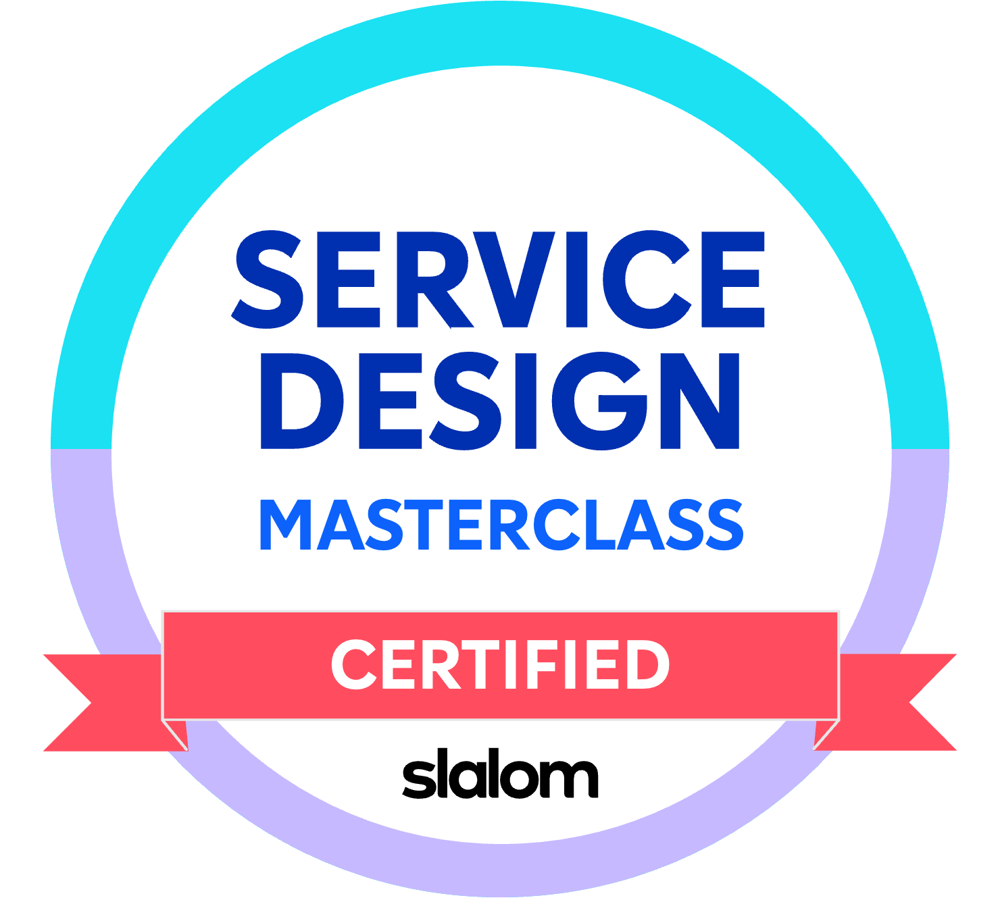
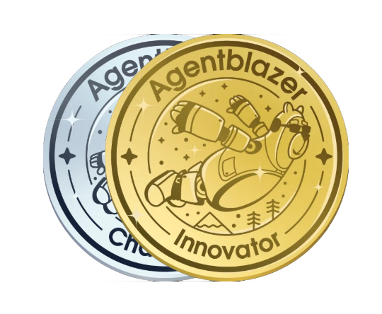
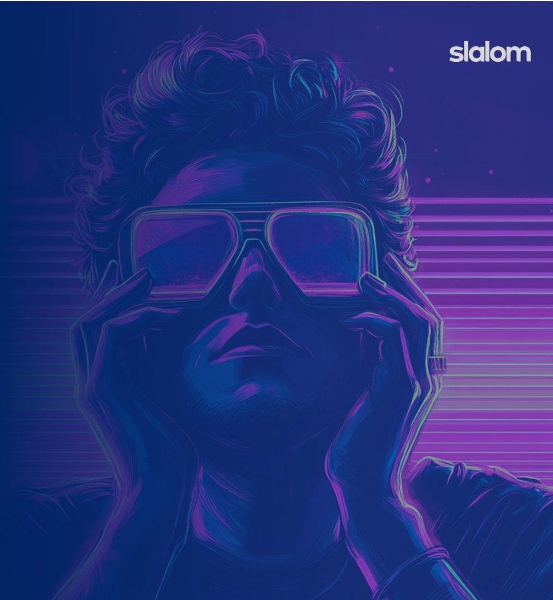
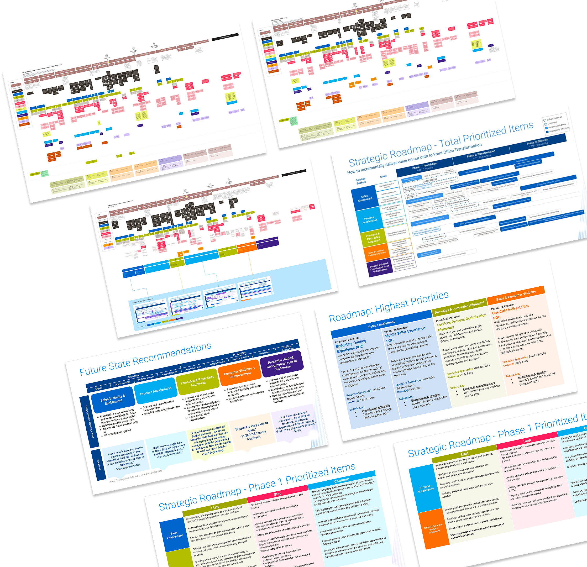
Manufacturing | Experience Strategy Lead
End-to-end strategy for lead-to-cash process
Summary
I was the lead experience strategist for this manufacturing project. The company has been dealing with disparate systems and disjointed processes due to a series of rapid acquisitions. I worked with another service designer to interview close to 100 stakeholders across the company to identify key gaps and opportunities for improvement. Our service design approach focused on elevating people, process, technology and data across the end-to-end customer lifecycle. The client is notoriously difficult to please and has high expectations of quality, and we were able to quickly gain trust, rapidly adapt our approach according to their feedback, and quickly deliver implementation plans and executive confidence.
Key pain points
- Disparate systems and disjointed processes, requiring a lot of manual work and technology workarounds
- Lack of data movement between systems and tools
- Low adoption of internal technology workarounds due to lack of user focus
- Downstream requirements causing burdens to upstream teams
Key contributions
- Stakeholder interviews
- Current and future state blueprints / journey maps
- Opportunity prioritization and improvements roadmap
- Executive and senior leadership socialization and alignment
Amanda has been absolutely critical to the success of this project. I specifically appreciated her ability to deliver clear and concise executive readouts, supported by top-tier presentation materials. She has been quick to implement feedback, demonstrating an exceptional ability to adapt to our specific needs, culture and communication style. I've also been impressed with Amanda's ability to rapidly grasp our complex (and sometimes esoteric) business, and be able to derive clear, structured, actionable recommendations.
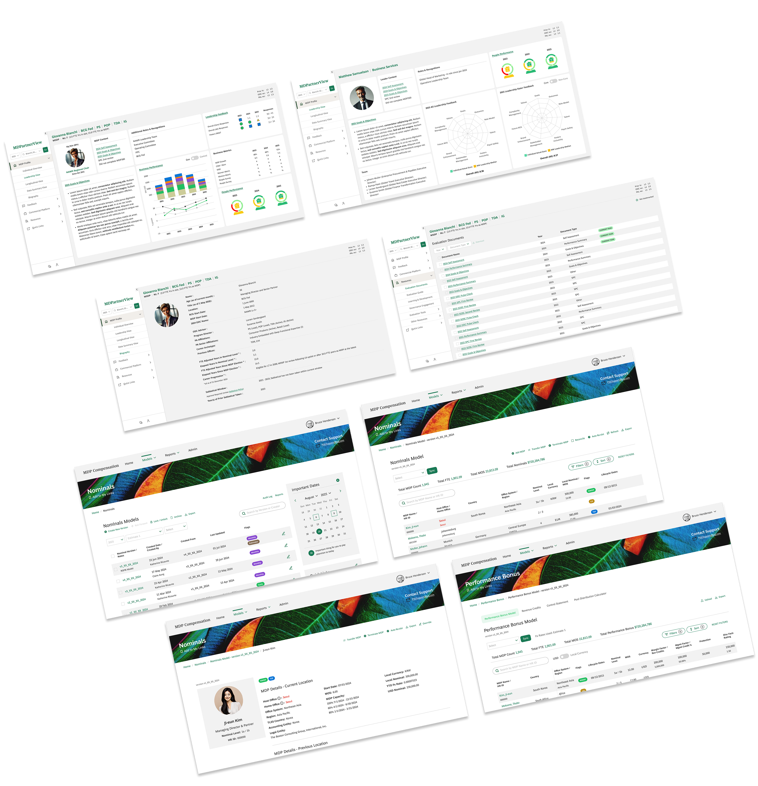
Professional Services | Experience Design Lead
Professional services legacy tools redesign
Summary
I was the lead experience designer for a set of internal legacy tools utilized by several performance teams for evaluating equity partners at this professional services company. I worked with stakeholders and internal user teams to identify needs, understand pain points, and make recommendations for solving them. I utilized the organization's design system to create a new look and feel for two different newly custom-built platforms.
Key pain points
- Legacy tools (20+ years old) that no longer meet the needs of users
- Too much data making the systems unstable
- Outdated designs with difficult navigation
- Sitemap with duplicated pages, making manual updates inefficient and difficult
Key contributions
- Reduced the need for manual updates by cleaning up sitemaps and improving navigation
- Improved user flow
- User data-driven experience enhancements
- New design for custom implementation; worked with engineers on feasibility and understanding technical constraints
Amanda has consistently impressed the squad and our service group with her deep knowledge of UX best practices and her creative, thoughtful design solutions. Her contributions have had a direct and meaningful impact on some of our most important launches. She managed work across multiple squads and yet her work never missed a beat. Amanda's patience, positive attitude, and calm presence brought great energy to our teams and made her an absolute pleasure to work with. Shes truly been an asset to the squad, and her work has set a high bar.
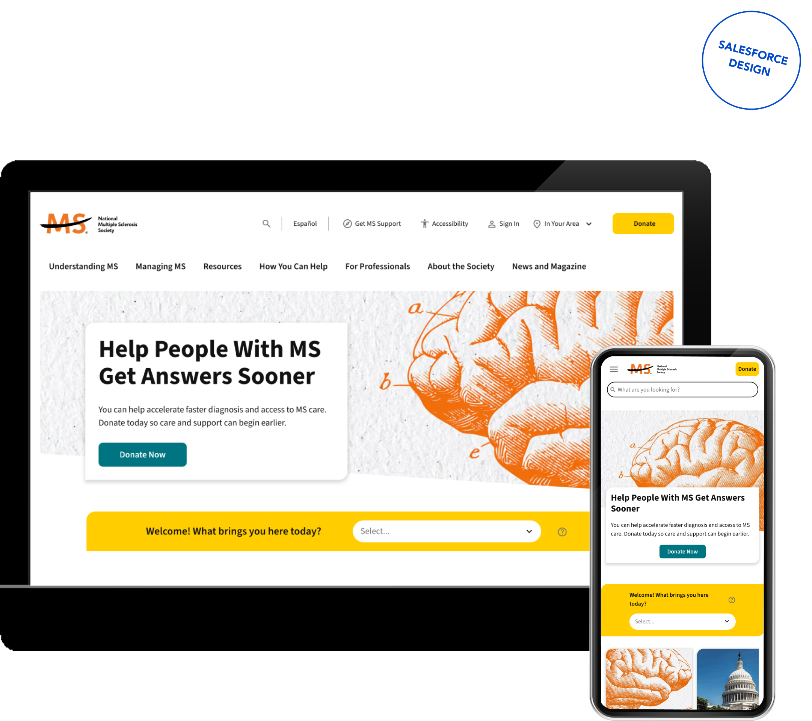
Nonprofit | Experience Design SME
National MS Society website redesign
Summary
I was the experience design subject matter expert brought in to support and improve processes on a large custom nonprofit website redesign, guiding a team of designers in UX best practices, implementing improved ways of working with stakeholders and cross-functional teams, standardizing the style guide, and liaising with developers through implementation. I was the last designer to roll off of the project and saw the project through completion and knowledge transfer.
Key pain points
- Lack of alignment and communication between design, development, and stakeholder teams
- Need for responsive design across all device sizes
- Need for accessibility-first design to best serve users living with physical and cognitive disabilities
Key contributions
- Established and implemented new ways of working between delivery and stakeholder teams
- Ensured design delivery through implementation
- Created handoff documentation and completed large-scale design system
- Conducted design training sessions with client design team
Read the client story hereAmanda was such an integral part of our team's success. She came into the project at a difficult time when we were not happy with the design team's work and she was able to right the ship. She provided thought leadership which regained our trust and guided the team by providing them with a structure and best practices to help organize their work and improve overall deliverable quality. Amanda was extremely patient and always willing to lend a hand whether to support the design or development teams to ensure that the best quality work was put forward.
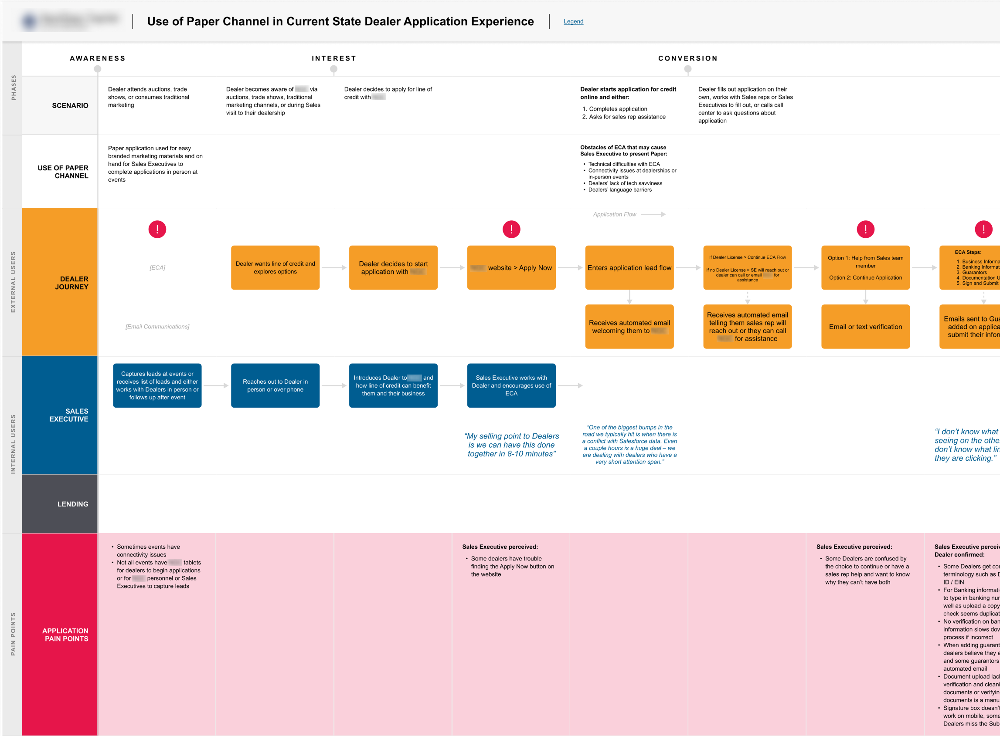
Financial Services | Experience Strategist
Paperless experience for auto dealer onboarding
Summary
I was an experience strategist tasked with assessing the current state paper channel experience between sales teams, dealership owners, and customers to determine organizational readiness for transitioning their application process to paperless. I interviewed dealership owners, internal stakeholders, and external customers to understand pain points and identify key opportunities, as well as helped the team prioritize these opportunities for success.
Key pain points
- Redundant channels for paperwork; causing frustrations for customers and dealership owners who must fill out onboarding and loan paperwork more than once
- Inefficient practices for organization and filing of claims or loans
- Low adoption of paperless channels due to change without proper training or communication
Key contributions
- Interviewed sales executives, lenders, dealers, and customers to understand current pain points and identify opportunities for improvement
- Created service blueprint to document current state paperless journey, including highlighting pain points, opportunities, and recommendations for improvements
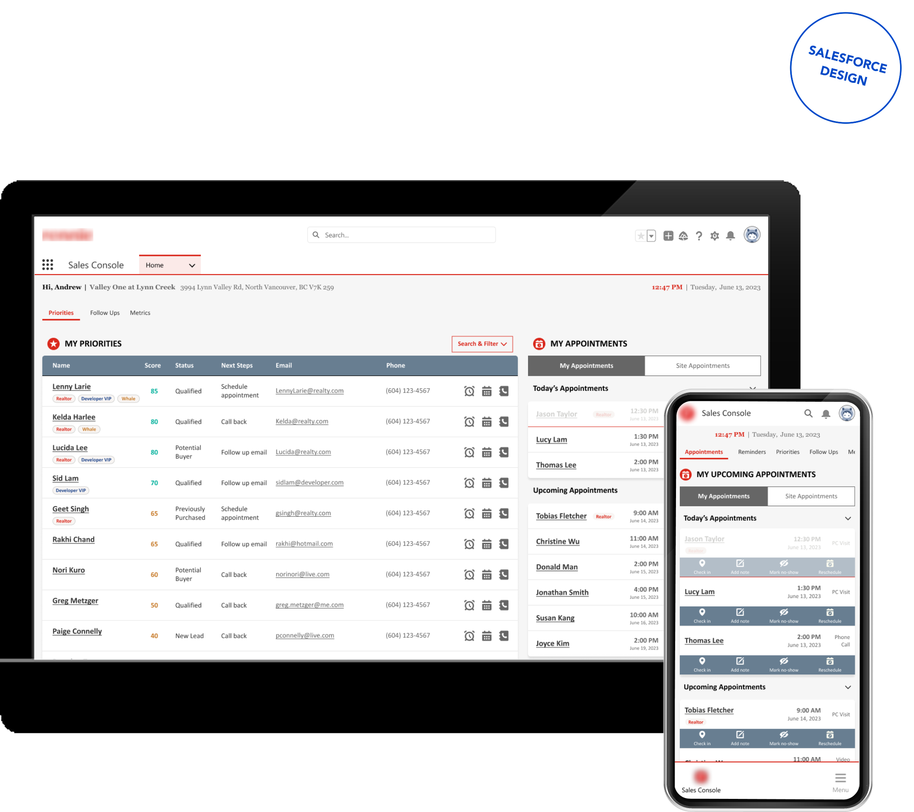
Real Estate | Experience Design Lead
Real estate internal sales console design
Summary
I was the lead experience designer for this real estate portal project, establishing the look and feel and implementing patterns across the site design. I worked with internal users and key stakeholders to bring their vision to life, keeping user needs and UX best practices top of mind.
Key pain points
- Undefined stakeholder needs
- Limited technical knowledge on implementation team
- Need for sales advisor and sales coordinator custom views
- Need for responsive design across all device sizes
Key contributions
- Interviewed key users and stakeholders to understand pain points and define needs
- Designed all screens for different user groups
- Stakeholder and technical team alignment
- Created look and feel aligned with Salesforce Lightning design system, defined user flow and delivered responsive designs across all device sizes
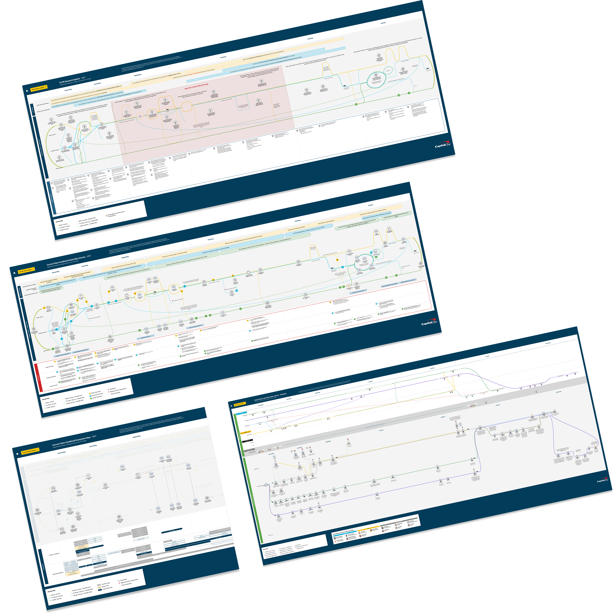
Financial Services | Experience Strategist
Financial services auto lending strategy
Summary
I was the lead experience strategist and designer tasked with creating interactive multi-layered end-to-end customer journeys, which helped executive and senior leadership identify organizational pain points, gaps, and opportunities across a robust ecosystem of auto financing products. The journeys helped the organization understand for the first time the key frictions that their consumers, lenders and auto dealers were encountering with their products, enabling them to make informed decisions to improve the overall customer experience.
Key pain points
- Undefined business customer needs
- Undefined consumer needs
- Lack of end-to-end visibility into relationship between business customers, loan officers, and consumers
Key contributions
- Supported user research team to interview business customers
- Synthesized research to inform strategic work
- Created multi-layered interactive end-to-end customer journeys, which allowed the organization to visualize interactions between its employees, customers, and complex ecosystem of digital products
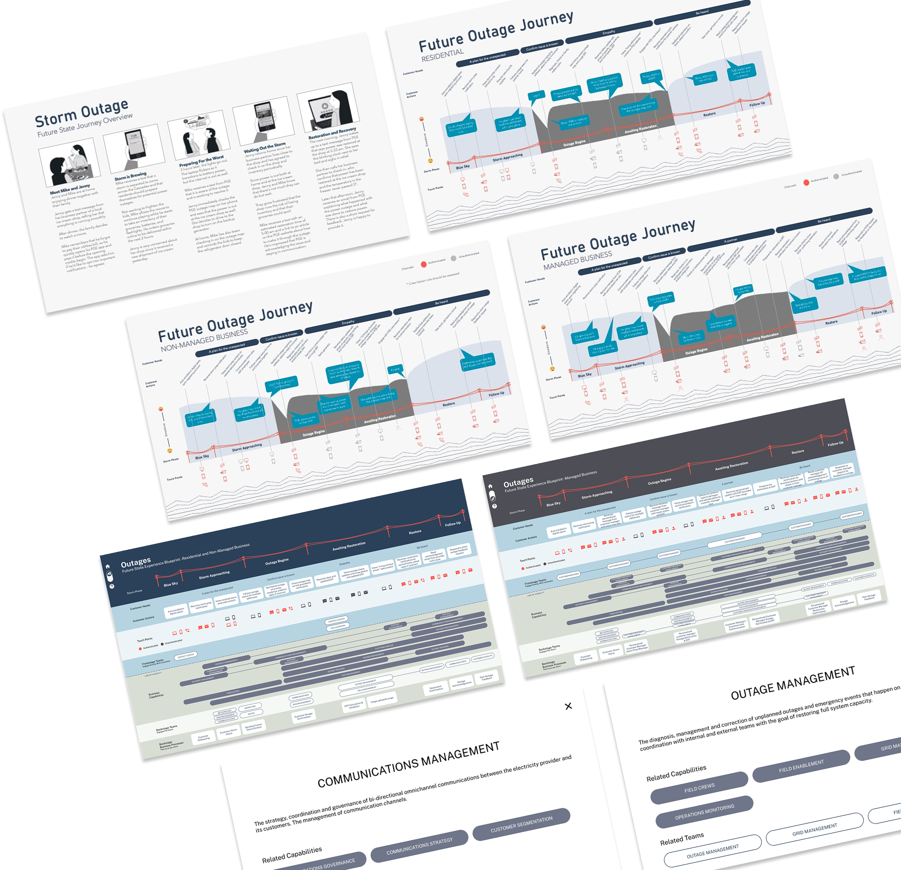
Resources – Utilities | Service Designer
Improving end-to-end strategy for service outages
Summary
A regional utilities company sought to redefine their customer strategy to proactively handle planned and unplanned service outages, starting with recent wildfires in the region. I was brought in as a service designer. I delivered a series of highly interactive service artifacts, recommending over 30 improvements that the company could implement over the next few years, aligning teams across the organization, as well as uncovering opportunities such as creating community-based programs to help customers in their times of need.
Key pain points
- Lack of visibility and alignment across communication channels and restoration process
- Lack of communication to customers about scheduled and unscheduled outages and lack of expectation setting for service restoration
- Outdated communication channels and website experience
- Need for data cleanup to better align technology and experience needs
Key contributions
- Interviewed key stakeholders and customers to identify current state pain points
- Facilitated stakeholder alignment and ideation sessions for future opportunities
- Visualized future state with storyboards, customer journeys and interactive service blueprints
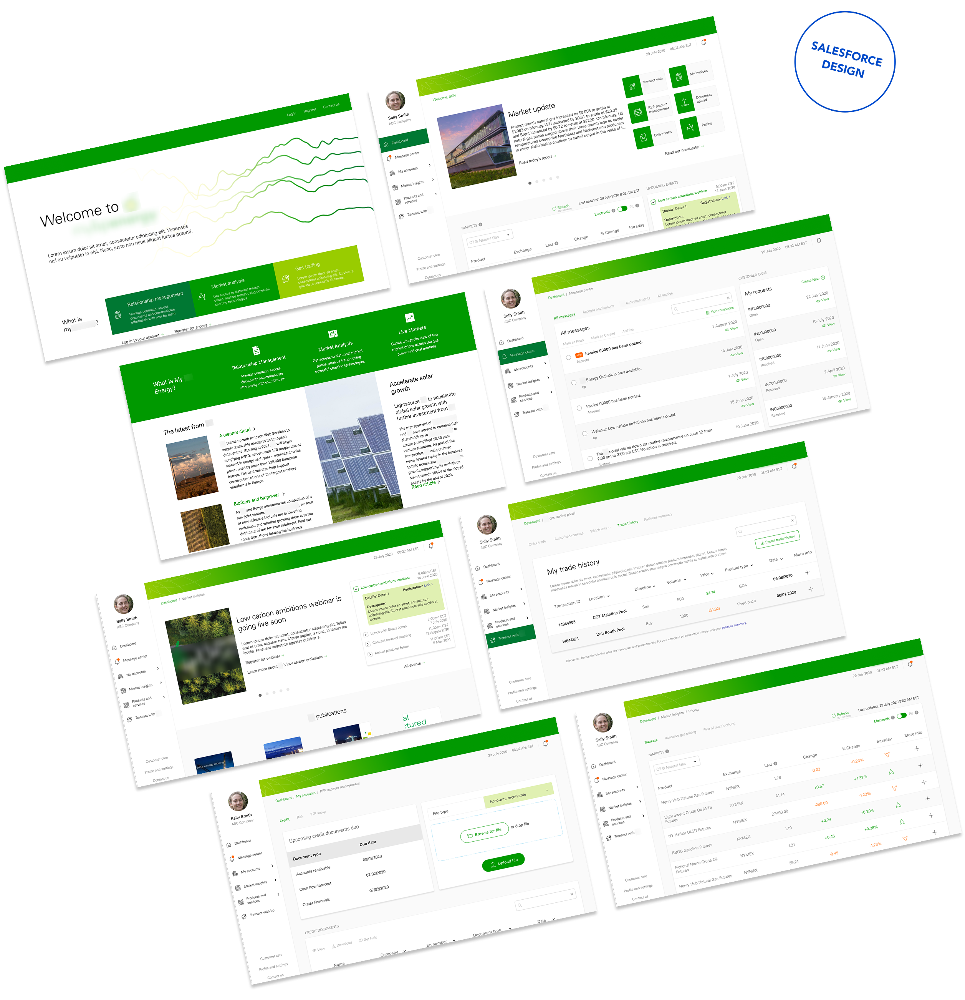
Resources – Oil & Gas | Experience Designer
Internal energy trading portal redesign
Summary
I was the experience designer for this customer portal redesign project, interviewing users and stakeholders to identify major pain points, then working with key stakeholders to bring their vision to life, keeping pain points and UX best practices top of mind. I worked with the technical team to understand backend architecture, technical constraints, and feasibility of solutions.
Key pain points
- Visual inconsistency across pages
- Messy sitemap and lack of hierarchy
- Decades-old SharePoint design
- Multiple sources of data, requiring manual updates and rework
- Need for marketing updates as well as gas trading functionality within one portal experience
Key contributions
- Reduced the need for manual updates by cleaning up sitemaps and improving navigation
- User data-driven experience enhancements
- Created look and feel aligned with Salesforce Lightning design system, improved user flow and delivered responsive designs across all device sizes